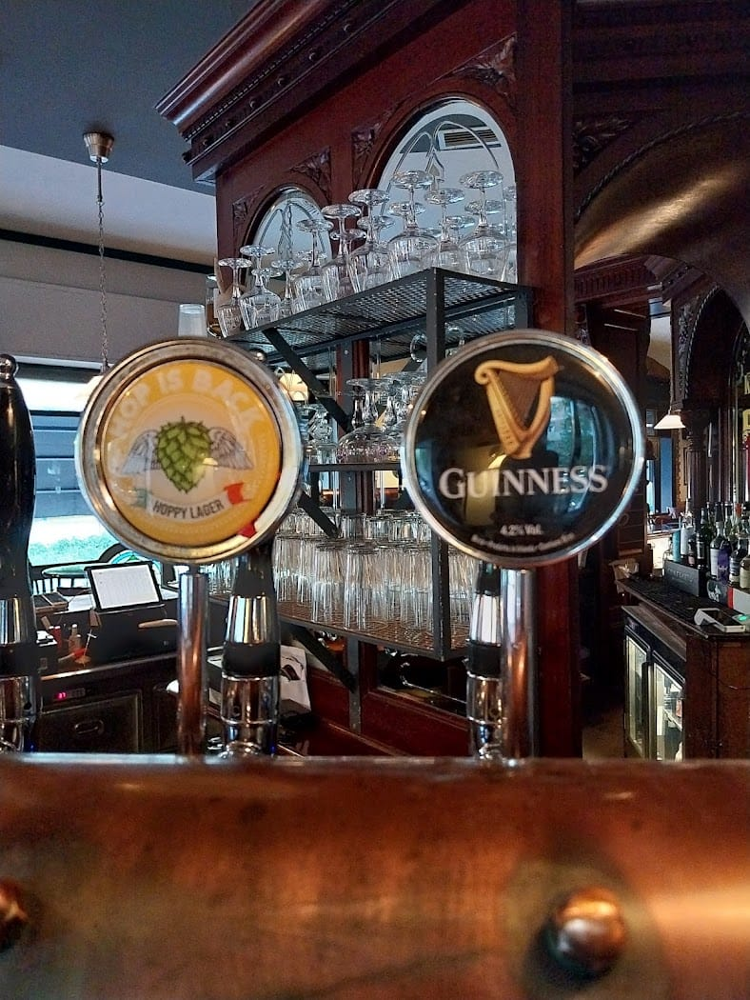
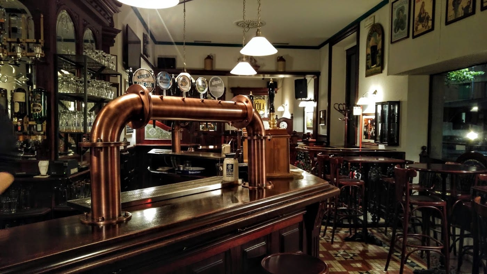
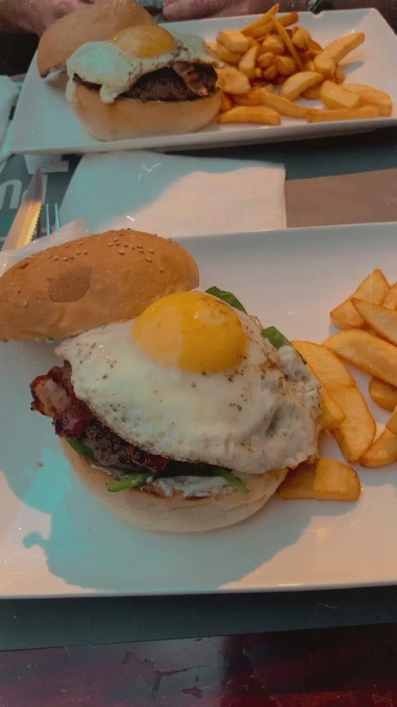
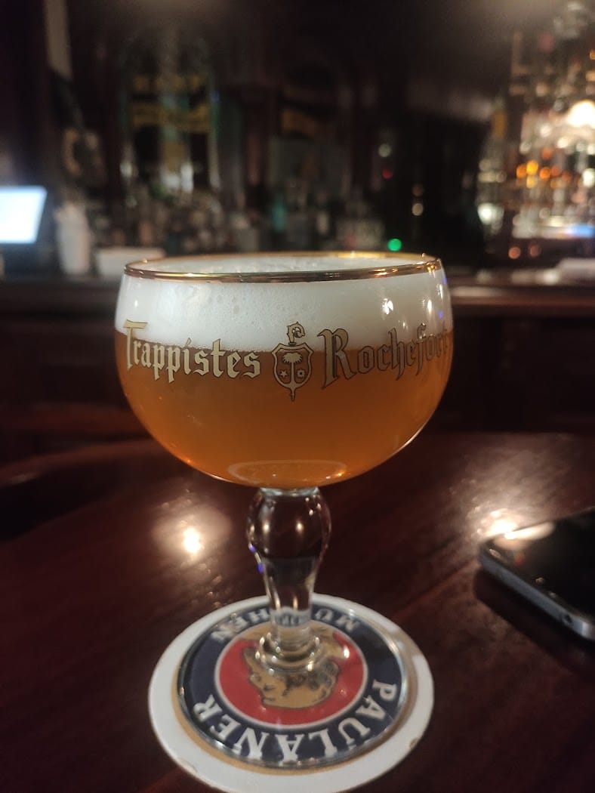
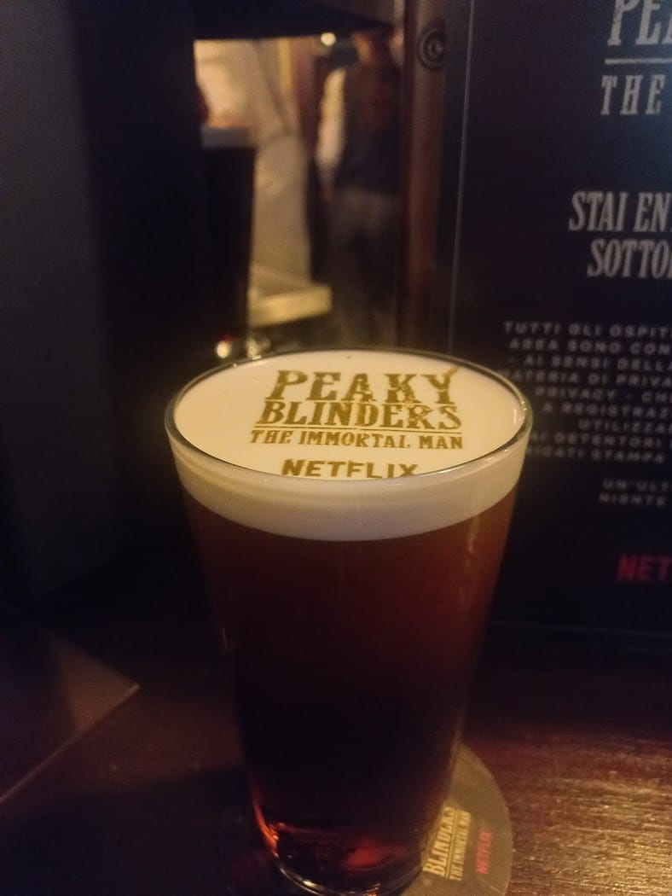
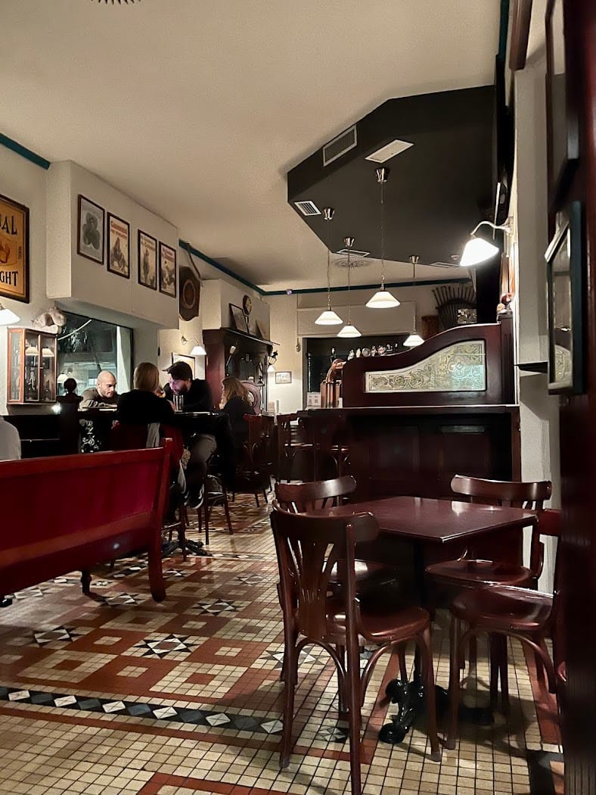
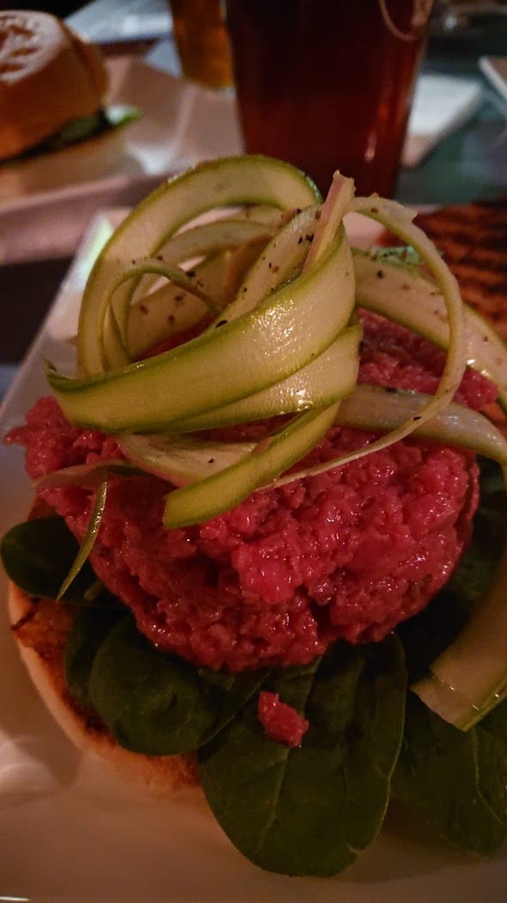
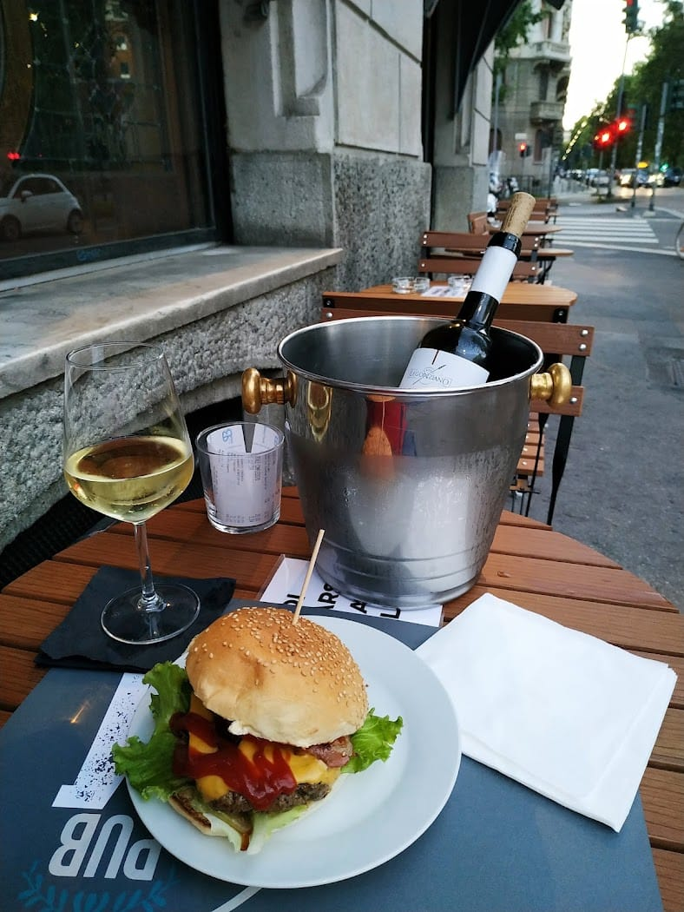
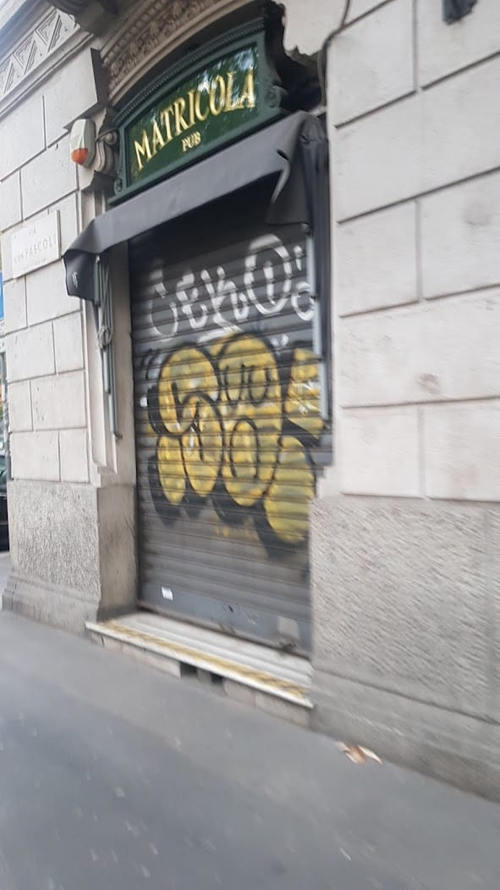

Birre alla spina
Guinness, trappiste e artigianali, sempre in rotazione. Più una carta in bottiglia.
Il pub di Città Studi dove la serata comincia con un aperitivo e finisce che è già domani. Birre alla spina, hamburger, cocktail e serate a tema, tra gli arredi in legno scuro.
Controllo orari…

La serata
Un aperitivo veloce che diventa cena, poi birra, poi cocktail — «come spesso accade», scrivono. Ecco come scorre una sera al Matricola.
Si comincia: birra fresca o cocktail e stuzzichini, appena finite le lezioni.
Hamburger, tartare, insalatoni: la cucina del pub, quella che riempie davvero.
Il momento delle spine e dei «Matricola's cocktails». Legno scuro, chiacchiere, musica.
Si chiude all'una, il venerdì e il sabato alle due. Poi si vede.
Birre & cucina

Guinness, trappiste e artigianali, sempre in rotazione. Più una carta in bottiglia.

Hamburger, tartare, insalatoni e i piatti del giorno. Aperitivo che diventa cena.

I «Matricola's cocktails» e i grandi classici, dall'aperitivo all'ultimo giro.
Menù completo in pub e su matricolapub.it. Prezzi da confermare.

Eventi & serate a tema
Il Matricola si trasforma: dalla serata «Garrison» a tema Peaky Blinders — anni '20, gioco d'azzardo (finto), magia e atmosfere d'epoca — agli appuntamenti fissi che animano Città Studi.
Tieni d'occhio il calendario: c'è quasi sempre un buon motivo per passare.
Gallery




Le voci
Locale carino, con un'atmosfera calda e accogliente grazie agli arredi in legno scuro: il classico pub dove fermarsi per un aperitivo in tranquillità. Lo staff è davvero molto gentile.
Antonio Baldari · ★★★★★
Sono stato una sera a fare un aperitivo che si è poi trasformato in cena, come spesso accade. Bella atmosfera e posto comodo a due passi dal Politecnico.
Marco Quarta · ★★★★☆
Il locale trasformato per l'evento a tema Peaky Blinders: ci siamo immersi negli anni '20 tra gioco d'azzardo (finto), magia e oggetti d'epoca. Serata davvero riuscita!
Eleonora Croce · ★★★★★
Dove siamo
La mappa è di Google: aprendola, Google riceve il tuo indirizzo IP e può usare i suoi cookie.
FAQ
In Viale Romagna 43, in Città Studi, vicino al Politecnico.
Tutte le sere dalle 18: fino all'01, il venerdì e il sabato fino alle 02.
Sì: aperitivo, hamburger, tartare, insalatoni e i nostri cocktail, oltre alle birre alla spina.
Sì, organizziamo serate ed eventi a tema. Chiama per il calendario.